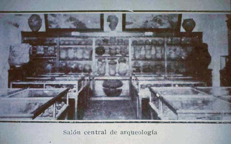

|
|  |
|
Museo Etnográfico, sección de arqueología calchaquí
|
This anthropological and evolutionary focus on the internal Other slightly changed towards the turn of the century, when new concerns over an excessive 'cosmopolitism' and the loss of 'cultural roots' started to preoccupy the ruling elite in the face of massive immigration from overseas. Both at the La Plata Museum and the new Museo Etnográfico, created at the University of Buenos Aires' Faculty of Philosophy and Letters in 1904, an archaeological interest in the indigenous civilisations of the Andean Northwest started to prevail over anthropological and anatomical investigations of the Pampean and Patagonian Indians (an active 'prehistorisation' which, both in Argentina and in Chile, went parallel with the military defeat, deportation and assassination of autonomous native communities in the South). The new Museum's director, Juan Bautista Ambrosetti, but also nationalist writers such as Manuel Gálvez and Ricardo Rojas, collected not only 'ancient objects' dug up from funerary sites in the provinces of Tucumán, Salta, and Jujuy, but also local legends and folklore that testified –they suggested– to the unbroken chain of a cultural memory still preserved in the region.
|